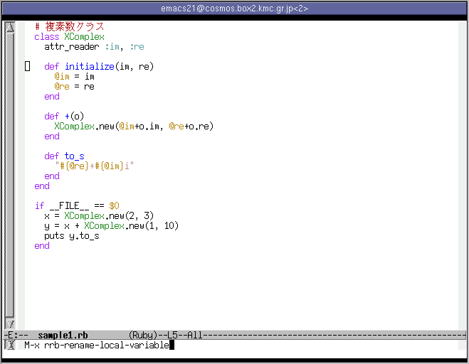
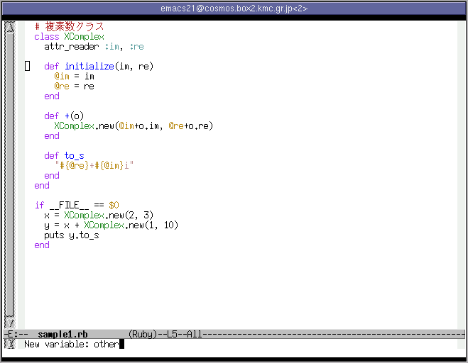
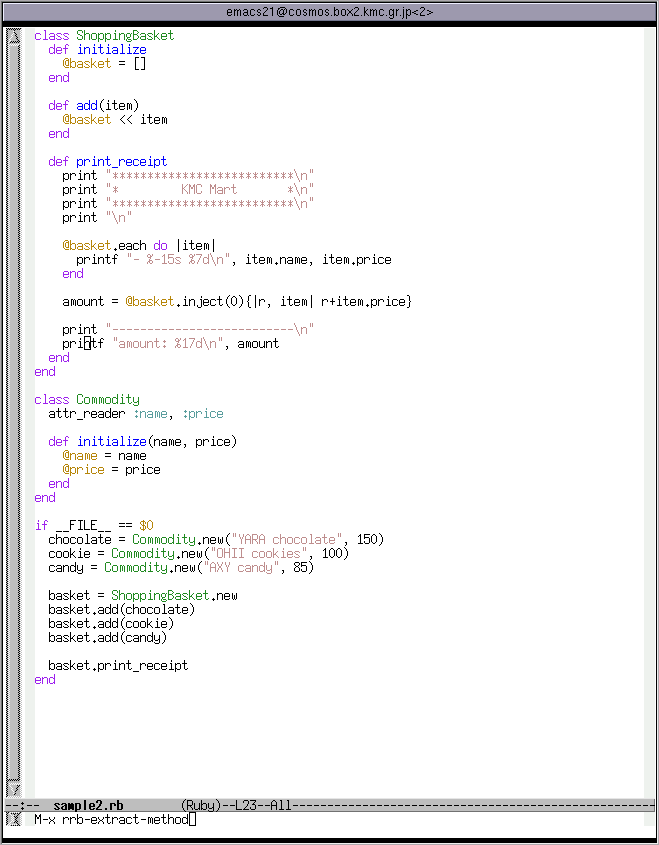
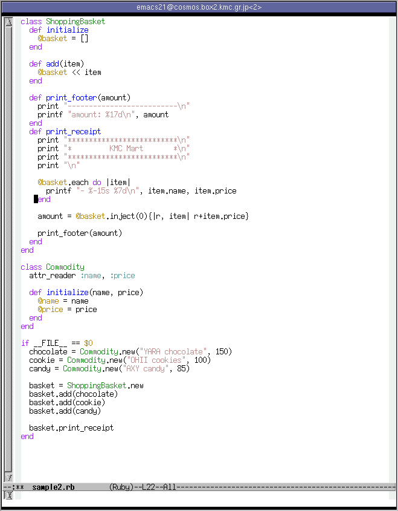
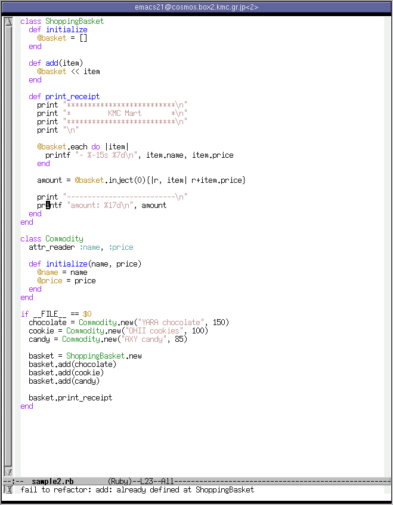
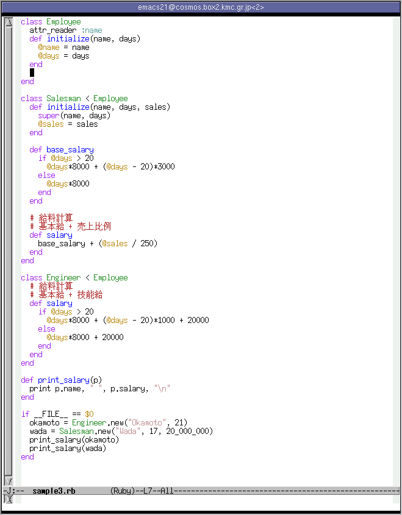

この文章では、Ruby用のリファクタリングブラウザ、「Ruby Refactoring Browser」 のEmacsでの使いかたについて解説します。
まず、Rubyの文法について十分な知識があることを仮定します。 また、リファクタリングの目的や方法、手順等についての知識も仮定します。 実際にリファクタリングを活用したことがあることが望ましいでしょう。
リファクタリングに詳しくない方は、まずマーチン・ファウラー著「リファクタリング」 を読むことをお勧めします。
Emacsの使いかたに関する知識も多少必要です。基本的な操作や.emacsの書き方を 知っていて、M-x hogeと書いてそれの意味するところがわかるくらいで 十分です。
まずはリファクタリングブラウザについて解説しましょう。 (注 リファクタリングツールという呼びかたのほうが一般的かもしれません) リファクタリングをする際には、新しいバグを作りこまないよう、「動作を変え ない」ように変更します。そして、それを実現するため、リファクタリングを 細かく分割し、そのそれぞれをパターンにあてはめてしまいます。例えば 「ローカル変数名を変更する」だとか、「コードの一部を別のメソッドとして切り出す」 だとかです。で、このとき、あなたが怠けものであるならば、きっとこう思うでしょう。 ローカル変数名の変更くらいコンピュータに自動でやらせりゃいいだろう、置換 コマンドでいちいち正しいか確認しながら変更していくのは面倒だ、と。 (注 「怠惰」はプログラマの三大美徳の内の一つでしたね) で、これを実現するのがリファクタリングブラウザです。 Smalltalkで最初に開発されたそうです。有名な開発環境ではEclipseの JDTがリファクタリング機能を備えています。
そして、Ruby用のリファクタリングブラウザがRuby Refactoring Browserです。
以上のことができます。 「コードの一部を新しいメソッドとして抽出」、「変数名の変更」などは 頻繁に使うでしょう。
配布等は<URL:http://www.kmc.gr.jp/proj/rrb/>でしています。
ここでは、Linux上でのインストールの方法を解説します。Unix系のOSでは ほぼ同じ方法でインストールできるはずです。
まずは、上で挙げたページから最新版のアーカイブをダウンロードします。 青木さんのsetup.rbを利用しているため、
cd rrb-0.1.0 **** $ ruby setup.rb config $ ruby setup.rb setup $ su # ruby setup.rb install
でrubyの部分はインストールできます。
そしてelisp/rrb.rbをEmacsのロードパスの通った所にコピーします。 あとは.emacsに
(load "rrb")
と書くなり、Emacsを起動してから
M-x load-library[RET]rrb[RET]
とするなりすればOKです。
では実際に使ってみましょう。まずはローカル変数名の変更からです。 以下のようなスクリプトで、XComplex.+のパラメータoをotherに変更しましょう。 ファイル名は、sample1.rbとします。
# 複素数クラス
class XComplex
attr_reader :im, :re
def initialize(im, re)
@im = im
@re = re
end
def +(o)
XComplex.new(@im+o.im, @re+o.re)
end
def to_s
"#{@re}+#{@im}i"
end
end
if __FILE__ == $0
x = XComplex.new(2, 3)
y = x + XComplex.new(1, 10)
puts y.to_s
end
emacs sample1.rbとして起動します。
M-x rrb-rename-local-variableとします。

まずは「どのメソッド」のローカル変数を変更するか、を指定します。 XComplex#+ですね。TABによる補完もできます。カーソル位置にある メソッドがデフォルト値になります。 「XC[TAB]+[RET]」と入力すればよいでしょう。

次に、ローカル変数の名前を選びます。これもTABで補完できます。 「o」とします。
最後に、新しい名前を入力します。ここでは「other」とします。

これで完了、下の図のように無事変数「o」が「other」に変更されました。

さて、Ruby Refactoring Browserにはリファクタリング作業専用のundoがあります。 M-x rrb-undoとしてみてください。先程のリファクタリングがなかったことになり ます。
この機能は複数のファイルをリファクタリングしたときに有効です。
ローカル変数の他にも、グローバル/インスタンス/クラス変数名、定数名、 メソッド名の変更もだいたい同じようにします。例えばインスタンス変数なら 「どのクラス」の「なんという名前の変数」を「何」に変更するか、 を指定します。アーカイブに含まれるdoc/emacs.ja.rdや <URL:http://www.kmc.gr.jp/proj/rrb/emacs.ja.html>などに多少 解説があります。
次にメソッドの抽出をやってみましょう。 例として挙げるのは以下のスクリプトです。名前はsample2.rbと しましょう。
class ShoppingBasket
def initialize
@basket = []
end
def add(item)
@basket << item
end
def print_receipt
print "**************************\n"
print "* KMC Mart *\n"
print "**************************\n"
print "\n"
@basket.each do |item|
printf "- %-15s %7d\n", item.name, item.price
end
amount = @basket.inject(0){|r, item| r+item.price}
print "--------------------------\n" # from
printf "amount: %17d\n", amount # to
end
end
class Commodity
attr_reader :name, :price
def initialize(name, price)
@name = name
@price = price
end
end
if __FILE__ == $0
chocolate = Commodity.new("YARA chocolate", 150)
cookie = Commodity.new("OHII cookies", 100)
candy = Commodity.new("AXY candy", 85)
basket = ShoppingBasket.new
basket.add(chocolate)
basket.add(cookie)
basket.add(candy)
basket.print_receipt
end
切り出す部分は from と書かれた行から to と書かれた 行までの範囲とします。新しいメソッドの名前は print_footer としましょう。
まず、切り出したい部分の最初の行の適当な位置でマークをします。 ただし、行の末尾でマークすると次の行からになるので注意してください。

次に、切り出したい部分の最後の行にカーソルを移動させてください。 これも行頭にカーソルを置くと前の行までになるのに注意してください。

そして、M-x rrb-extract-method[RET]とします。 新しいメソッドの名前を入力してC-m(Enter)を押せば実行されます。

以下のようになります。切り出す部分で使われているローカル変数は 新しいメソッドの引数になります。

さて、rrb-undoで元にもどしてから、今度は add という名前で切り出し てみます。
すると、名前が重複しているため、以下のようなメッセージが 表示されます。

このように、ある程度はチェックをしてくれます。 ただしこのチェックは完璧ではありません。名前の重複のような 低コストでチェックできることしか見ていません。 よって、変更後のユニットテストはちゃんとしてください。
3番目の例として、あるクラスのメソッドをそのスーパークラスに 移動させましょう。対象となるスクリプトは以下のもの、名前は sample3.rbとします。
class Employee
attr_reader :name
def initialize(name, days)
@name = name
@days = days
end
end
class Salesman < Employee
def initialize(name, days, sales)
super(name, days)
@sales = sales
end
def base_salary
if @days > 20
@days*8000 + (@days - 20)*3000
else
@days*8000
end
end
# 給料計算
# 基本給 + 売上比例
def salary
base_salary + (@sales / 250)
end
end
class Engineer < Employee
# 給料計算
# 基本給 + 技能給
def salary
if @days > 20
@days*8000 + (@days - 20)*1000 + 20000
else
@days*8000 + 20000
end
end
end
def print_salary(p)
print p.name, " ", p.salary, "\n"
end
if __FILE__ == $0
okamoto = Engineer.new("Okamoto", 21)
wada = Salesman.new("Wada", 17, 20_000_000)
print_salary(okamoto)
print_salary(wada)
end
Salesman#base_salary を Employee に移動させましょう。
まず、カーソルを新しいメソッドが置かれる場所に移動させます。 その行は空白行である必要があります。

つぎに、M-x rrb-pullup-method[RET]と入力します。
移動するメソッドを入力します。Salesman#base_salaryと指定します。

最後に、移動先のクラスを指定します。Employeeです。 (これは必要ないような....)

結果、以下の画像のようになります。

ここからさらにEngineer#salaryをリファクタリングしていけますね。
サブクラスへの移動も同様の手順でできます。
Rubyのライブラリによくあるように、スクリプトの一部を 「if __FILE__ == $0 … end」で囲む必要があります。 そして、そのスクリプトがrequireで読みこまれた場合、クラス/メソッド/定数 の定義だけを行い、実際の実行がされないようにする必要があります。
これは、スクリプトから定数定義情報や、クラスの継承階層を取り出すために、
require '/tmp/rrb/script1.rb' require '/tmp/rrb/script2.rb # 以下requireが続く
というスクリプトを生成し、それをrubyの処理系で実行しているからです。
ちなみにRubyファイルとは、「.rb」で終わるファイル、もしくは先頭行に 「#!/usr/local/bin/ruby」のようなshebangな行がある場合です。
EmacsにはIDEでいうプロジェクトのような概念がありません。そのためこの ような仕様が妥当でしょう。
まったく関連のないrubyスクリプトを編集する場合はEmacsを複数起動して ください。
パーサが1.7相当にしか対応していません。
上で書いたようにRuby Refactoring Browserは対象のスクリプトを実行します。 そのとき$rrb_run_for_reflectionというグローバル変数がtrueになっています。 「if __FILE__ == $0 … end」ではうまくいかない場合はこちらを使えば よいかもしれません。
このツールはまだ発展途上にあります。様々なバグレポート、patch、その 他開発に対する寄与を我々は期待しています。
当プロジェクトはRubyForgeを利用しています。 プロジェクトページ にはBTSやCVSリポジトリなどが置いてあります。こちらを利用してください。
Ruby Refactoring BrowserでRubyプログラミングがさらに楽しくなればと願って います。
さて、次回はRuby Refactoring Browserの機能を様々なIDE/エディタから利用できる ようにする方法を解説する予定です。